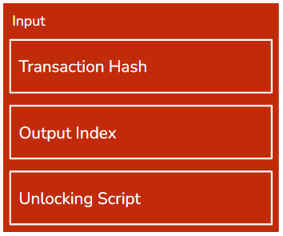

4.1. Chapter¶
On Halloween 2008, a month after the more than a hundred years-old investment bank Lehman Brothers filed for bankruptcy a user calling themselves Satoshi Nakamoto published a whitepaper on a crypto mailing list. This whitepaper described an electronic peer-to-peer currency called Bitcoin. The genesis block was published in January of 2009 and Bitcoin came to life.
Note
You might be confused why we referred to Bitcoin’s creator in plural. This is because no one knows who Satoshi Nakamoto actually is. It could be a single person, a group or even a company, we just don’t know. Many have tried to uncover this secret but have come short. For those interested in learning more about Satoshi Nakamoto we recommend The Book of Satoshi by Phil Champagne.
Although Satoshi never mentioned the word in the whitepaper, Bitcoin introduced us to Blockchain. This was by no means an accident. Bitcoin’s goal was to decentralize finance and in the aftermath of the 2008 financial crisis the idea had backing. The whitepaper argued that the financial system being a centralized one was a problem and that a distributed system would be advantageous. The blockchain solution therefore addresses the drawbacks of a distributed system to make it usable.
Bitcoin’s blockchain was therefore created to support decentralized token exchange. Participants could exchange the blockchain’s native token, Bitcoin, without the need for any central authority. For much of 2009 the blockchain was in the realm of enthusiasts as the token didn’t even have a trade-able value. This changed in October, a little less than a year after the whitepaper, when the first exchange of Bitcoin was launched offering 1,305 BTC for 1$. The cryptocurrency continued its rise and eventually became the behemoth we know it as today.
Bitcoin was the genesis project for Blockchain and as of 2022 it is still the most popular project. Understanding Bitcoin will help us get a better perspective on blockchain. In this chapter we will go into the details of the Bitcoin implementation.
4.1.1. Bitcoin Summary¶
Bitcoin is a PoW public blockchain that is created to support the exchange
of its token. A run-down of the project is as follows:
Token: The Blockchain’s native token is Bitcoin. The maximum
supply of Bitcoin is capped at 21 million.
Participant Rights: Bitcoin is completely open and permissionless
so anyone can join as a participant and have full read & write rights.
Consensus Algorithm: Bitcoin uses Proof-of-Work with SHA-256 hash
puzzle. The difficulty is readjusted every 2 weeks to keep ABCT constant.
Data: Bitcoin data is token exchanges called transactions.
Average Blockchain Creation Time (ABCT): 10 minutes.
Mining Incentive:The block creator is rewarded with the native token
Bitcoin from transaction fees and a general block reward.
While Bitcoin is a network that can be accessed through a publicly-known port it is typically run on a software implementation called Bitcoin Core. There are multiple implementations out there, you could even create your own, but 96% of nodes use Bitcoin Core. The software manages a bitcoin full node and typically makes all the choices for the node. Its development history can be traced all the way back to Satoshi Nakamoto and is now hosted as an open-source project on GitHub.
4.1.2. Bitcoin Block & Transaction¶
Bitcoin’s block is around 1MB with the header being 80 bytes. Most of the space is taken up by transactions. The block header is composed of:
Version - The version of the software implementation like Bitcoin Core.
Previous Block Hash - The link to the last block in the blockchain linked list.
Timestamp - The unix timestamp for when the block was produced. Can be 2 hours off and still be valid.
Merkle Root - The root of the merkle tree containing the transactions in the block.
Difficulty - The difficulty of the hash puzzle. Nodes use this value to calculate the target.
Nonce - The input field miners can use to change the block header so it solves the hash puzzle.
The bitcoin block header is very bare-bones. This is because space is incredibly limited so any redundancy is removed. When every node, regardless of type, has to store every block header, with a new one being added every 10 minutes, even a single byte adds up.
Tip
Alot of blockchain projects differ on the block size. This is because it’s a very sensitive issue as space vs throughput is a hotly debated topic in the blockchain world. Some original contributors to Bitcoin got into a bitter argument about whether Bitcoin’s block size should be increased. This feud is covered in detail in The Block Size Wars by Jonathan Bier.
Bitcoin’s data is transactions and transactions are concerned with token exchange. Each transaction is composed of the following:
Version - Like in the block header the version denotes the version of the software implementation and so the rules the transaction has to follow.
Input Counter - The number of inputs in this transaction.
Inputs - A list of inputs used in this transaction.
Output Counter - The number of outputs in the transaction.
Outputs - A list of the actual outputs used in this transaction.
LockTime - A field that prevents this transaction from being used for a given period, largely deprecated except for the Lightning Network.
Delegated Witness - A Segwit feature that is out of the scope of this textbook.
Transactions are often bigger than the block header itself because there is a fair level of complexity in them. One of these complexities is deciphering what inputs and outputs are. For the following paragraph think of them as simply where the bitcoin is coming from, inputs, and where the money is going, output.
To validate a transaction we need to check the following:
Are the inputs valid? (We will discuss this shortly)
Are Inputs > Outputs?
The order in the list is arbitrary we can do either one first. You might be wondering why the latter point isn’t Inputs=Outputs. This is because the difference between the inputs and outputs forms the transaction fee. The transaction fee is the incentive for the miner to include your transaction in their block as often there are more transactions than space in blocks. Transaction fees can be 0 and the transaction will eventually be included in a block but that could be several hours, if not days, after the transaction was first broadcast.
Bitcoin transactions can be ordered within the merkle tree in any order the miner wants except for the first one, the coinbase transaction.
Tip
Yes, that is where the popular crypto exchange got its name from.
If you remember the last chapter, we talked about how one part of the mining incentive is a piece of data in every block that is inherently correct. In Bitcoin this is the coinbase transaction. The coinbase transaction is how the miner rewards themselves for winning the hash puzzle and publishing a block. The input of the coinbase transaction is irrelevant, it’s often the place of the extra nonce.
Note
As Bitcoin mining got more competitive miners were discovering that the 2^32 possible nonce values solved the hash puzzle. They then started to change the timestamp as time passed by but sometimes not even that was enough. This is when the data in a coinbase transaction started to be used as an extra nonce solution.
While we don’t need to verify coinbase inputs we need to check that the miner has not rewarded them-self with too much bitcoin. The coinbase transaction output has to equal the block reward, which is well-known by the network, and the sum of all the transaction fees of the transactions in the block. If the output is larger than that the whole block is rejected.
4.1.3. UTxO Model¶
We will now talk about the inputs and outputs.
When we think of managing money we think of having an account with a balance. This has the benefit of being a simple way to think about one’s finances, but it has a drawback: space. Every account, no matter how big or small, needs to have an account and balance and this leads to redundancy. This is a big problem for the space sensitive blockchain so Bitcoin decided to only record unspent payments. This way accounts with no payments or an empty balance won’t fill the blockchain.
Note
Bitcoin’s model isn’t the only one used by blockchains. Projects like Ethereum use the standard account & balance model known as the state model.
To do this Bitcoin reimagined what a payment is and how we store money. In Bitcoin a transaction is just a collection of inputs and outputs. Inputs are former outputs that are assigned, via a digital signature, to a particular entity. Outputs are a certain amount of Bitcoin being assigned to a new entity. Your ‘balance’ is now the sum of all the outputs you are yet to put into a transaction. These outputs are known as unspent transaction outputs and give this finance-tracking model its name, the UTxO model.
Tip
By entity we just mean an address that has a public/private key. This ‘entity’ could be an individual, group or even company.
{kind=link}
Bitcoin outputs are relatively simple. They are arranged in a list, where order matters, and are composed of an amount and lock script. This lock script is a script verifies the digital signature of the entity it was issued and has to be unlocked, the digital signature must be verified, for the output to be used as an input.
{kind=link}
Bitcoin inputs are a bit trickier. They are composed of the hash of the transaction they were an output in, their index in the list of outputs of that transaction and the unlocking script that proves the digital signature. Each input must reference a single unspent output which means this input is the only input, in the entire blockchain, to reference the output.
Inputs and outputs therefore have a one-to-one relationship. This means that unspent outputs, from now on UTxOs, can only be spent in full. But what if we want to send a payment with an amount that none of our UTxOs can sum to? The answer is in the fact that a single transaction can have multiple inputs and multiple outputs. To solve our problem we just collect UTxOs that sum to more than we want to pay and anything left over after the payment and transaction fee is made into a separate output addressed to ourselves, a refund output.
Example
Alice wants to send Bob 30 bitcoins with a 1 BTC transaction fee. She has the following unspent UTxOs to choose from:
UTxO |
Amount (BTC) |
|---|---|
A |
5 |
B |
30 |
C |
50 |
Alice will be spending a total of 31 BTC and the closest sum that is greater than that is A + B. A&B sum to 35 BTC so Alice will also be creating a 4 BTC refund output. We can therefore express the inputs & outputs as follows:
Inputs:
Output |
Digital Signature |
|---|---|
A |
Alice |
B |
Alice |
Outputs:
To |
Amount (BTC) |
|---|---|
Bob |
30 |
Alice |
4 |
This transaction would be valid as the sum of inputs is 35 and the sum of outputs is 34. The 1 BTC difference is the transaction fee paid to the miner. Alice has now lost UTxOs A&B and her balance has dropped from 85 BTC to 54 BTC with a new UTxO of amount 4 BTC. Note the table representation is an oversimplification.
Using the UTxO has a number of implications:
Flexibility - Outputs and inputs can be used when the locking/unlocking script is satisfied. Bitcoin has a number of locking scripts with the most popular being p2pkh which uses addresses. But different locking scripts work with multi-signature addresses and even bare public keys.
Privacy - Outputs in a single transaction can have different recipients and inputs can be unlocked with different digital signatures. This has the benefit that we can disperse our funds over a number of addresses increasing one’s anonymity as it is more difficult for someone to track our balance.
Note
A Dust Attack is an attack vector that tries to weaken the latter feature. We will cover this in detail in the following chapters.
P2PKH (Pay 2 Public Key Hash) scripts work through Bitcoin addresses. Bitcoin addresses are, like classic addresses, hashed public keys but in Bitcoin they are encoded in Base 58 format to make them more readable. All Bitcoin addresses begin with a 1 to make them easy to differentiate.
Note
Base 58 format is an encoding format that is a more-readable version of Base 64. Base 64 is a number system with 64 numerals. They are represented by all the capital letters, un-capitalized letters, numerals 0 to 9 and + and /. Base 58 removes characters that are frequently confused, like 0 and o, and has a built-in check that detects if you wrote it wrong.
4.1.4. Bitcoin Script¶
Reviewing what we now know about transactions and UTxOs data(transaction) validation in Bitcoin breaks down into 2 steps:
Is the sum of outputs smaller than that of inputs?
Are all the inputs unlocked correctly?
If the answer to both is yes then the transaction is valid. But how does the network actually check this? While it may be tempting to say that the software implementation, like Bitcoin Core, solves this that is not the case. Because the network has to be unanimous with all of its decisions’ data validation is done through a single programming language, Script.
Script is a low-level stack-based programming language that does the processing nodes need to do for Bitcoin. Script, which is reminiscent of the old programming language Fortran, was originally developed by Satoshi Nakamoto. Script is used for transaction verification and where locking/unlocking scripts exist. It is non-turing complete which means what it can do is limited. This might seem like a drawback but is actually a very intentional feature to prevent a malicious attacker from creating very complicated Script code that could slow the network down.
Stack
Stacks are a very important low-level data structure in CS. They are a FIFO (First-In First-Out) list where you add and take from,pop, from the top of the stack. You can liken it to a stack of pancakes. You add the pancakes on top and have to first eat the pancakes on top.
Script is a programming langauge that isn’t like the languages you might know, such as Python or Java. Script is made up of operation codes, represented through 1 byte of hexadecimal. Script works by adding these op codes onto the stack along with any data, like addresses, the op codes need to work with. The op codes then take the data from the stack and produce a new value. The op codes at the top are executed first.
Below is an example of the code for a p2pkh locking script:
OP_DUP OP_HASH160 62e907b15cbf27d5425399ebf6f0fb50ebb88f18 OP_EQUALVERIFY OP_CHECKSIG
Script is not intuitive and is very limited for the sake of efficiency. Most bitcoin developers will rarely, if ever, interact with Bitcoin Script as software implementations are expected to be the only ones that deal with it.
4.1.5. Bitcoin Operation¶
We will now examine how Bitcoin works day-to-day through the lens of transactions.
For this section we will be looking how Alice can send 10 BTC to Bob. We start by creating the transaction. Alice, or more precisely her wallet software, keeps track of all her UTxOs. This is not a completely trivial task as for the sake of privacy Alice can have UTxOs addressed to a number of her addresses.
Before she can select her UTxOs Alice also needs to consider the transaction fee. Transaction fees are completely up to Alice and while she could have no transaction fee this is has some consequences. Although Bitcoin transactions are time-weighted, so eventually the transaction will be put into a block, transactions with 0 or very small fees can take hours, if not days to be added to the blockchain. The ‘average’ transaction fee is dictated by the market with supply & demand. If there are very little transactions being broadcast, fees are relatively low, if there are alot of transactions then fees are high. Wallet software almost always track the average transaction fees so Alice doesn’t have to worry about this much. For the sake of simplicity lets say that Alice’s wallet software tells her the average transaction fee is 1 BTC, and she decides to use that amount.
Tip
Bitcoin transaction fees are amount-blind which means that they are roughly the same for a 1BTC transaction and 10000 BTC transaction. Miners just look at the fees not the amount transferred in the transaction.
Now Alice knows that she needs to spend a total of 11 BTC, she can now start finding the UTxOs to use. After some searching, by her wallet software, Alice found three UTxOs that sum to 13 BTC, so she will also need to have a refund output of 2 BTC. Her transaction will therefore have 3 inputs, the UTxOs, and two outputs, one output locked by Bob’s address worth 10 BTC and one locked by Alice’s address worth 2 BTC. Alice then organizes this into a formal transaction and then broadcasts it to the network. Wallet software typically has its own node, can be either full or light, through which it broadcasts Alice’s transaction to the network.
Now Alice’s job is done. She created the transaction and now has to hope she’s done everything correctly. When nodes receive the transaction they verify the data. First they check the sums of output and input and after that verify that all the UTxOs are unspent and unlocked by the unlocking script. They do this by searching for the UTxOs in their UTxO set that every node maintains. If all the UTxOs are there the transaction is valid. If the transaction passes validation it is stored in the nodes mem pool as a valid but unconfirmed transaction. The node then propagates the transaction onwards to the rest of the network. Propagation throughout the network is done in seconds.
After Alice’s transaction is in their mem pool, miner nodes can decide whether they include the transaction in their candidate block. This decision is important for Alice as a transaction isn’t truly confirmed until it’s included in a valid block. For large payments some vendors wait until the transactions has 6-confirmations which means the transaction is in a valid block that is at least 6 blocks below the current block height. Miners choose the transactions on their own so different candidate blocks will most likely have different transactions and merkle roots.
Note
Technically Bob doesn’t have to wait for Alice’s transaction to be added to a block. This is called a 0-confirmation transaction, and it is a very fast but very risky way of accepting Bitcoin transaction in return for real-world products. All that Bob, or his software, has to check is that the transaction is valid and so work with the idea that the transaction will eventually get confirmed by a block,
Let’s say that a miner by the name of Carl decides to include Alice’s transaction in his candidate block. Carl decides to put Alice’s transaction as the second one in his transaction list, the first position is reserved for the Coinbase transaction which Carl constructs after he assembled the rest of the transaction list. Carl’s coinbase transaction amounts to a whopping 100 BTC, 6.25 from the Block Reward (As of 2022) and 93.75 from transaction fees including Alice’s. Carl gets straight to solving the hash puzzle and after around 10 minutes since the last block was added Carl solves it.
He immediately broadcasts the block to other nodes that verify the block. This includes verifying transactions, the coinbase transaction, whether its output is equal to the block reward & transaction fees, and checking whether the block header hash is below the target. Carl’s block is valid and nodes add his block to their own versions of the Bitcoin blockchain. As the nodes do this they clean up the mem-pool and UTxO set so the UTxOs Alice used as inputs are deleted and the ones she created as outputs are added, her transaction is also erased from the mem-pool. As soon as Bob’s wallet software receives this block it informs him of the successful transaction.
Bob now has a new UTxO of 10 BTC and his transaction with Alice is complete.
4.1.5.1. SPV Nodes¶
Simplified Payment Verification nodes are Bitcoin’s light nodes. They only store the block headers and are able to prove transactions are recorded in the blockchain through merkle paths provided by full nodes. They were included in Bitcoin’s whitepaper and are a solution to how space-limited parties can actively participate in the blockchain.
Note
SPV nodes heavily utilize something called Bloom Filters. If you have ever taken Cornell’s CS2112 this should be a refresher. Bitcoin is very privacy-centric and to make sure that full nodes can’t track what transaction an SPV node is interested in it uses bloom filters. Rather than asking for one particular transaction, a node sends a binary sequence bloom filter which tells the full node to return all the transactions whose hash in binary has at least 1’s in the same place as the bloom filter. If a bloom filter is all 0’s then the node returns all the transactions while a more specific bloom filter, with more 1’s, is efficient but less anonymous.
For a more rigorous, and technical, introduction you can try this link.
4.1.6. Miscellaneous¶
Bitcoin is a currency blockchain which are often called cryptocurrencies. Cryptocurrencies have alot of specifics that are not a part of the generic blockchains we discussed in previous chapter. The final section of this paragraph will cover Bitcoin’s additions to a generic blockchain.
4.1.6.1. Wallets¶
In the preceding section we mentioned wallets alot, but what actually are they. In the most basic terms, a wallet is just a collection of public & private keys. However, these uber-simplistic wallets are rarely used as they don’t provide any of the convenient features like UTxO tracking or transaction creation & broadcasting. Popular wallet software provides users with all the features they need to use Bitcoin without ever having to worry about the details.
Note
Although our discussion of wallets is in the Bitcoin chapter they are used by all other cryptocurrency blockchains. The following types of wallets are not limited to just Bitcoin.
Wallets are one’s key, pun intended, to the blockchain. As Blockchains are used by different people with different use-cases wallets have a number of different types. Some types are more archaic than useful, but they are still important as they help us understand blockchain’s, and particularly Bitcoin’s, origins.
Tip
Wallets don’t hold cryptocurrencies. This is like saying your pockets hold your car because its holds your car keys in it. The car pocket example is analogous to crypto wallets. They hold the keys needed to access your crypto, the same way car keys are needed to access your car.
4.1.6.1.1. Custodial v Non-Custodial¶
The following two types differ on whose responsibility the wallet is.
Custodial wallets are kept safe by a third-party custodian. The custodian has access to the private/public keys so when you lose your password or the wallet itself, if its hardware, your crypto is safe and access can be restored. While custodial wallets are more forgiving it comes at the cost of a severe reduction in privacy and dependence on the custodian’s legitimacy and security. As the custodian has access to the keys, and therefore the funds, if they are malicious or their security is broken your funds are at risk.
Non-Custodial wallets are completely yours. No one else has access to them offering a strong degree of privacy but at the cost of being completely your responsibility. If you lose the keys or the wallet the crypto funds controlled by them are as good as lost, this has happened before. They are primarily used by privacy-centric individuals or those who posses a large amount of cryptocurrencies.
4.1.6.1.2. Hot v Cold¶
The following types differ on where and how they are stored.
Hot wallets store their public-private keys online, often behind a layer of protection. They are usually custodial and have the benefit of quick processing of transactions. Transactions can be signed and therefore broadcast immediately and effortlessly. This makes them a popular choice for online exchanges but their security is limited. Because the keys are online their security is down-graded from ECDSA-grade to the quality of the wallet’s online security. This has been a problem more than once with one notable case being an early Bitcoin exchange called Mt. Gox.
Cold wallets on the other hand store their keys completely offline, typically through hardware. They are almost exclusively non-custodial. They are more secure as no online hacker can access them, but they shift the entire burden of maintenance onto their owner. If they are lost or damaged the crypto funds controlled by them are put under risk. They are nevertheless the most popular choice for privacy-centric users, some go as far as printing their private keys on a piece of paper and putting it in a safe.
4.1.6.1.3. Wallets & Keys¶
While we mentioned that wallets’ primary function is to store keys we are yet to mention how they do that and, arguably more importantly, how they are generated.
JBOK (Just a Bunch Of Key) Wallets are just that. Just a bunch of keys. The keys are generated randomly and kept in a secure place. JBOK wallets are relatively straightforward, in theory, but are very fragile as losing the place where they are stored constitutes an irreversible loss of the wallet. Further if the wallet implementation is badly built and uses ordinary pseudo-random software to generate keys your funds might be at stake even if you did everything right. JBOK wallets were the original type of wallet on Bitcoin but have largely been phased-out by HD wallets.
HD (Hierarchical Deterministic) Wallets are built on a mathematical model. Keys are generated from a single seed, long binary sequence, that can be represented as a mnemonic. So long you remember the mnemonic the seed can be constructed and so can an infinite, 2 billion child keys from each parent, number of derived keys. This makes HD wallets backup-friendly and the default for backup-concerned wallets like MetaMask or Ledger. The drawback is that the security of the HD wallet depends on the privacy of the seed/mnemonic. If the mnemonic is leaked your funds are under threat, although there are implementations which encrypt the mnemonic with a password.
4.1.6.1.4. Wallet Comparison¶
Except for JBOK, wallet types are serve different, but relevant, use cases. A run-down of how different types can be used is below:
Hot |
Cold |
|
|---|---|---|
JBOK |
Back-up difficult, |
Largely outdated. |
HD |
Good for casual-use |
Highly secure but |
4.1.6.2. Token Supply¶
Bitcoin’s token supply is fixed and regulated. There will only ever be 21 million bitcoin with the last bitcoin being created around 2140. Satoshi Nakamoto intentionally create this ‘coded inflation’ to simulate real-world inflation.
Bitcoin, the token, is generated through block rewards in the coinbase transaction. The token reward that is assumed valid is actually the source of Bitcoin inflation and all Bitcoin that ever existed was created in a coinbase block reward. This makes the block reward serve an elegant double-purpose, both to incentivize the miner and act as a source of new Bitcoin.
Block rewards are dictated by software and, as we reach 21 million BTC created, halve every 210,000 blocks. The block reward was initially over 50 BTC but as of 2022 is just 6.25 BTC. Satoshi’s idea was that as time passed transaction fees would make up for the lost block rewards.
While block rewards offer a source of inflation, errors on the side of users or intentional acts by malicious ones offer a source of deflation. Known as burning, this is when bitcoin tokens are lost and take tokens out of circulation. This happens every day and while bitcoin inflation is fixed this sort of accidental deflation is not meaning that in the very long-term the amount of circulating Bitcoin is likely to fall. Already, an estimated 10% of create Bitcoins is presumed lost or unrecoverable.
4.1.6.3. Limitations & Bitcoin’s Future¶
Bitcoin was the project that introduced the world to Blockchain. Being the first has its pros, namely recognition and first-mover advantage, but it comes at the drawback of being antiquated. Bitcoin’s creator disappeared in the early 2010s and without a central leader major changes to Bitcoin look unlikely. This means that Bitcoin is destined to remain the steam-powered ocean-liner of the blockchain world. This is most evident in its lack of scalability, can process 3-4 transactions per second, inefficient consensus algorithm, PoW has been criticized for being very energetically inefficient, and limited functionality, Script is limited to transaction verification.
Bitcoin’s drawbacks have lead to the creation of a large number of competitor projects like Ethereum, Cardano or Litecoin. Many of these competitors have active development teams supporting them so their technological advantage over Bitcoin will only grow.
But not all hope is lost for Bitcoin. While the core project will most likely never change in any large meaningful way there is a community of developers trying to build on top of Bitcoin. The most notable is Layer 2 with projects such as the Lightning Network or the Liquid Network. These projects significantly increase Bitcoin’s scalability and reduce its dependence on PoW. We also must not forget that as of 2022 Bitcoin is still the largest, by market valuation, blockchain project and the most recognizable. For many Bitcoin and blockchain are synonymous. As of 2022, Bitcoin has also been adopted by governments such as El Salvador and Tonga with other countries, like Bulgaria, owning significant amounts of Bitcoin. This all has bolstered a group of people who believe Bitcoin is the ultimate blockchain solution called Bitcoin Maximalists.